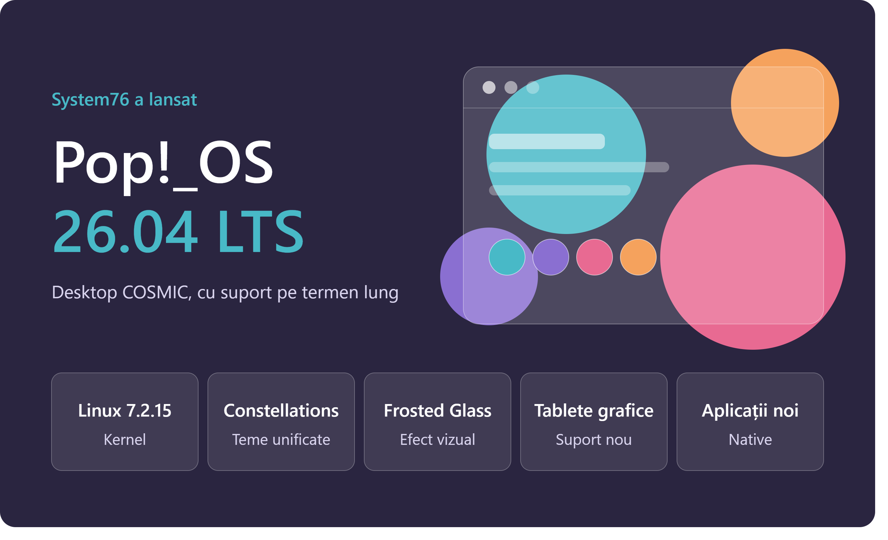

System76 a lansat Pop!_OS 26.04 LTS: Kernel Linux 7.2.15, sistemul unificat de teme COSMIC Constellations, efect Frosted Glass, suport pentru tablete grafice și aplicații native noi

System76 a anunțat disponibilitatea versiunii Pop!_OS 26.04 LTS, cea mai nouă ediție cu suport pe termen lung a distribuției sale Linux, construită pe baza Ubuntu 26.04 LTS și propulsată de nucleul Linux 7.2.15 (alături de Mesa 26.2.3 și driverele NVIDIA 595). Lansarea integrează aproape un an de dezvoltare pentru mediul desktop nativ Wayland scris în Rust, COSMIC, aducând pachete unificate de teme, aplicații native noi, actualizări automate și îmbunătățiri semnificative pentru gaming și creatori de conținut.
1. COSMIC Constellations, efect Frosted Glass și suport creativ/accesibilitate
Sistemul de teme unificate
COSMIC Constellations: Accesibil din setările de aspect ale desktopului, permite schimbarea simultană a imaginii de fundal, culorilor de accent, pictogramelor și fonturilor printr-un singur profil, eliminând configurarea separată a fiecărui element. Utilizatorii pot personaliza temele existente, pot aplica noul efect de transparență Frosted Glass și pot exporta temele create pentru backup sau partajare.Suport nativ pentru tablete grafice: Introduce configurarea tabletelor grafice cu sensibilitate la înclinarea stiloului (pen tilt sensitivity), extinzând capabilitățile COSMIC pentru artiștii digitali și profesioniștii creativi.
Tastatură pe ecran și accesibilitate: Adaugă o tastatură virtuală (on-screen keyboard) care suportă atât ecrane tactile, cât și controlul prin gamepad, alături de dimensiuni ajustabile ale cursorului, lupă de ecran (screen magnification) îmbunătățită, localizarea cursorului prin scuturarea mouse-ului (shake to find cursor) și posibilitatea de a configura parcurgerea ciclică a spațiilor de lucru (workspace wrapping).
2. Aplicații native COSMIC, actualizări automate și optimizări pentru gaming
Aplicații native noi în ecosistemul
libcosmic: Portofoliul de aplicații scrise nativ se extinde cu COSMIC Viewer (vizualizator de imagini) și COSMIC System Monitor, alături de un magazin de aplicații COSMIC Store complet redesenat (plus utilitarul Popsicle portat pelibcosmic).Actualizări automate și Remote Desktop: Actualizările automate pentru sistemul de operare și aplicații pot fi activate direct în timpul instalării sau ulterior din setările de sistem. De asemenea, mediul desktop adaugă suport nativ pentru Remote Desktop.
Îmbunătățiri pentru gaming și grafică hibridă: Jucătorii beneficiază de restricționarea cursorului în ferestre (pointer confinement prin protocolul Wayland Pointer Constraints), comportament îmbunătățit în modul fullscreen (inclusiv pentru Steam Big Picture) și selecție automată optimizată a plăcii grafice dedicate pe sistemele cu grafică hibridă.
3. Disponibilitate și cale de upgrade
Imagini ISO pentru instalări noi: Pop!_OS 26.04 LTS este disponibil imediat pentru descărcare de pe site-ul oficial System76 (cu variante dedicate pentru arhitecturile
x86-64șiARM64, inclusiv imagini cu driverele NVIDIA preinstalate).Upgrade din Pop!_OS 24.04 LTS: Deoarece COSMIC urmează un model de dezvoltare rolling-release, multe dintre funcționalitățile desktop sunt deja disponibile utilizatorilor Pop!_OS 24.04 LTS prin actualizările obișnuite, iar upgrade-ul direct la baza sistemului 26.04 LTS va fi activat oficial în cursul lunii decembrie 2026.